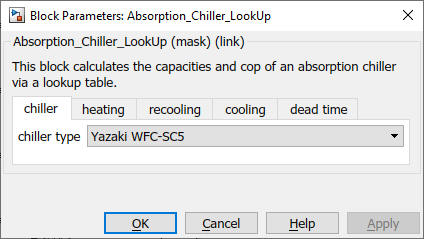
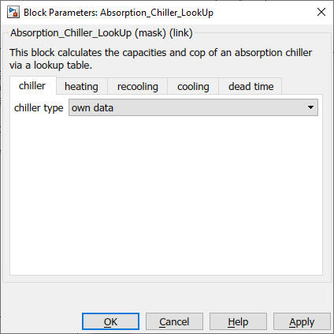
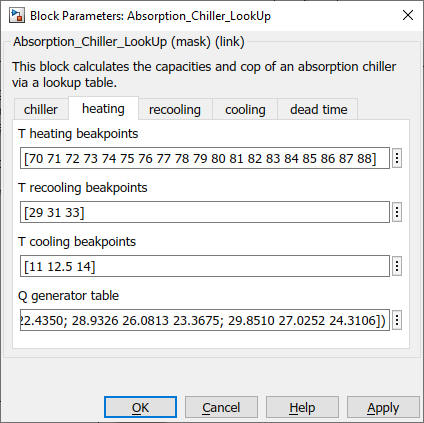
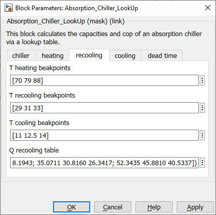
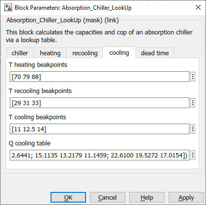
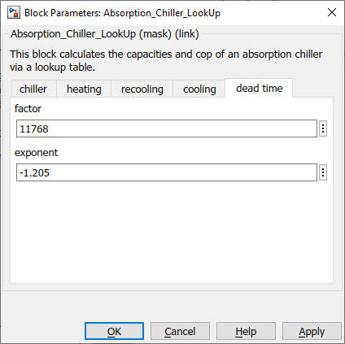

Absorption_Chiller_LookUp
Path: CARNOT/Source/Chiller
Purpose:
This block calculates the capacities and cop of the absorption chiller
Yazaki WFC-SC5 (nominal cooling capacity: 17.6 kW, nominal COP: 0.7)
based on measured curves.
Description
The capacities and COP are calculated by lookup-tables for the three
capacities dependent on the three input temperatures, based on measured
data.
The block includes a dynamic start-up behaviour with a dead time of
the cooling capacity and capacities in all cycles.
The dead time depends on the mean generator temperature at start.

Additionally the power of the solution pump is given out.
The measured curves are only valid for the following volumeflows:
HT: 4320 l/h
MT: 9180 l/h
LT: 2770 l/h
Measurement range:
T_HT_IN 70 .. 88 °C
T_MT_IN 29 .. 33 °C
T_NT_IN 11 .. 14 °C
Outside of this range the lookup-tables extrapolate.
Additional files: The lookup-tables use data of the Variables WFC_q_hot,
WFC_q_recooling and WFC_q_cold, which are stored in Yazaki_KF.mat and loaded as
a PreLoad-Function
Input:
Output:
Parameters and Dialog Box:

Select "own data" for access to the parameters and the definition of another
machine:





Examples:
Open the example explorer from the Matlab command window
ExampleBrowser
or load the examples via the CARNOT library.
- example_Absorption_Chiller_LookUp
Validation report
Lohmann: VALIDIERUNG DES BLOCKS ABSORPTION CHILLER YAZAKI WFC-SC5,
FH Duesseldorf, 2014
Literature:
Adam, M., Lohmann, S., Radosavljevic, R., Goebel, J., & Gottschald, J. (2013):
Solare Kuehlung im Hardware-in-the-Loop-Test, Abschlussbericht zum
Forschungsprojekt FKZ 17 42X09, Hochschule Duesseldorf
Adam, M.; Lohmann, S.: Vermessung der Yazaki-Absorptionskaeltemaschine WFC-SC5;
KI Kaelte-Luft-Klimatechnik, 01-02 2014
Characteristics:
| Direct Feedthrough |
: |
Yes |
| Sample Time |
: |
Inherited from driving block |
| Vectorized |
: |
No |